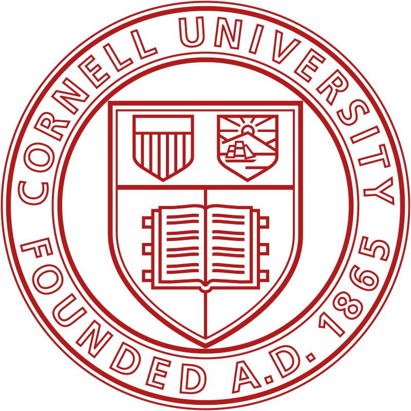

Education

Cornell University
College of Engineering
B.S. Computer Science
GPA: 3.9 | Aug 2018 - May 2022
Minors in Linguistics and Operations Research
Organizations: Life History Lab (research assistant), Cornell Undergraduates in Linguistics (social chair), Cornell University Sustainable Design: Currents (predictions team member), Association of Computer Science Undergraduates
Bethlehem Central High School
GPA: 4.0 | Sep 2013 - Jun 2018
Organizations: Science Bowl (co-captain), Linguistics Club (president), Science Olympiad, Masterminds, Varsity Cross-Country, Varsity Track, Varsity Swim and Dive